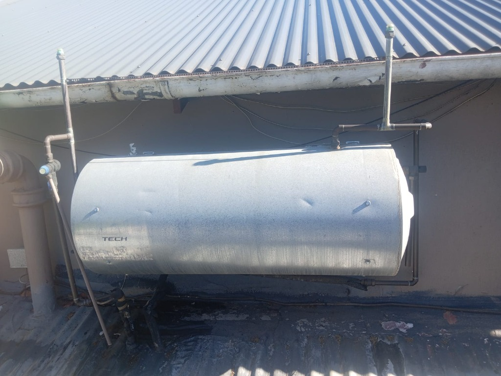
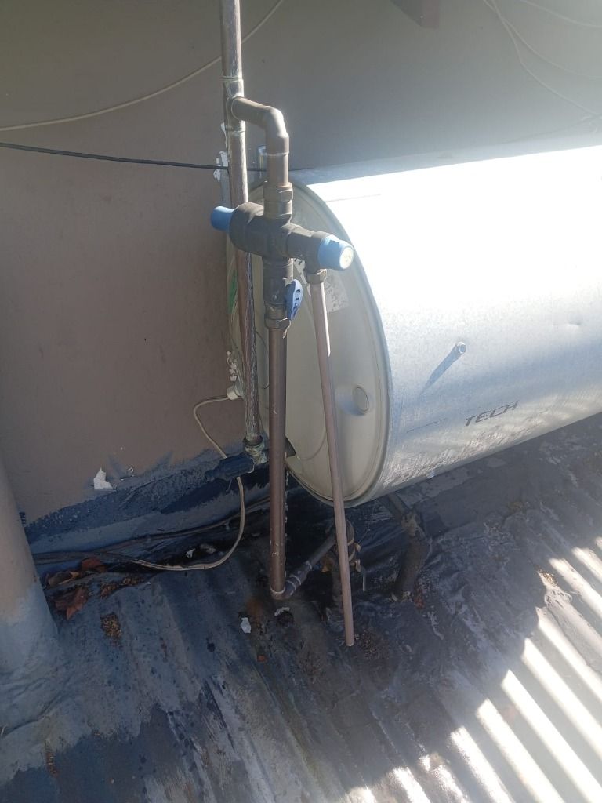

SANS 10254 ComplianceA geyser rarely fails without warning — it usually gives you a few weeks' notice first, if you know what to look for. Catching these signs early is the difference between a planned repair and a flooded ceiling on a Saturday night. Here are five common signals that a geyser is on its way out.
1. Discoloured or metallic-tasting water
Rusty, brown or metallic-tasting hot water usually means the inside of the tank is corroding. It's most noticeable first thing in the morning, when water that's been sitting in the tank overnight comes through the tap. A little discolouration after a long dry spell can be normal, but if it's persistent, the tank itself is on its way out.
2. Popping or rumbling noises
Sediment builds up at the bottom of a geyser over years of use. As it hardens, water trapped underneath it boils and escapes as steam bubbles, which is what causes the popping or rumbling sound some older geysers make when heating. It's not dangerous on its own, but it's a sign the tank is working harder than it should and won't last much longer.

3. Inconsistent water temperature
If your hot water runs lukewarm, or the temperature swings between hot and cold during a single shower, the thermostat or element may be failing. Sometimes this is a simple, inexpensive fix — but on an older unit it can also be the first sign the whole system needs replacing rather than repairing.
4. Moisture, dripping or a leaking drip tray
Every geyser installation should have a drip tray and overflow pipe to catch minor drips safely. If you notice water pooling under the geyser, staining on the ceiling below it, or the overflow pipe dripping constantly, don't leave it — a slow drip today is often a full leak within weeks, and geyser leaks are a common cause of ceiling damage.
5. The geyser is getting old
Many geysers last somewhere around 8 to 12 years, depending on water quality and maintenance. If yours is approaching that age and hasn't been serviced, it's worth booking an inspection. Replacing a geyser on your own schedule is a lot less stressful than an emergency call-out after it bursts.
Seeing more than one of these signs? It's worth booking a geyser inspection before it fails completely. If it's already leaking or flooding right now, treat it as an emergency and switch off the electrical isolator before calling us.

Ready to get this sorted?
Call our team or request a free quote — we'll give you a straight answer on cost and timing.
Prefer to message? WhatsApp us on the same number